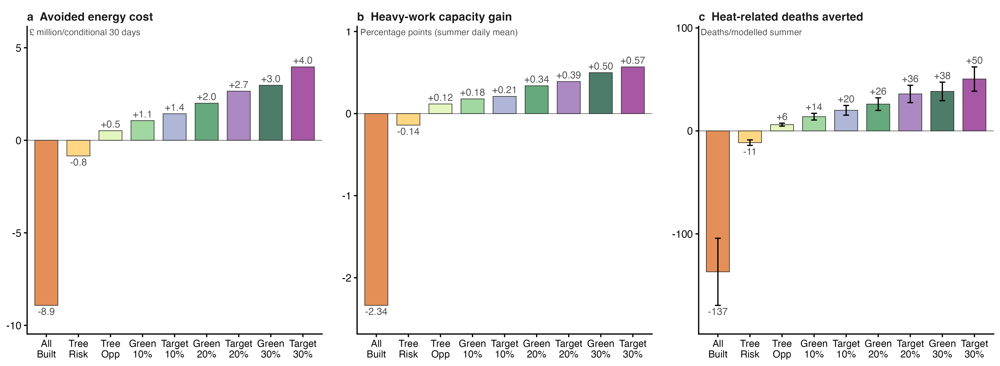
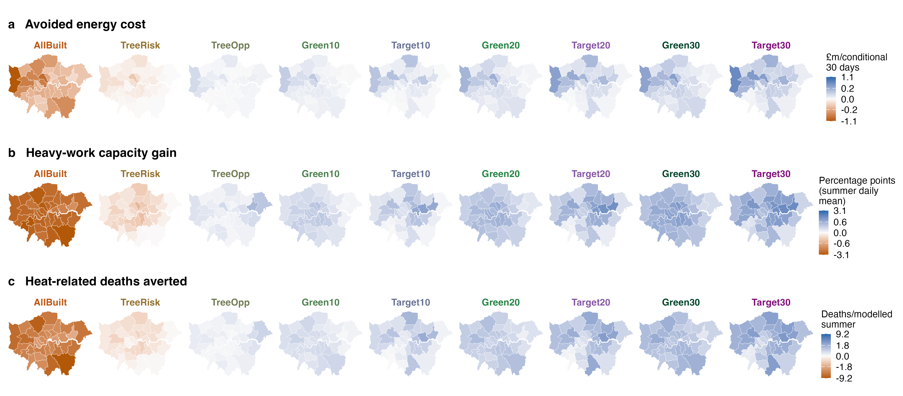
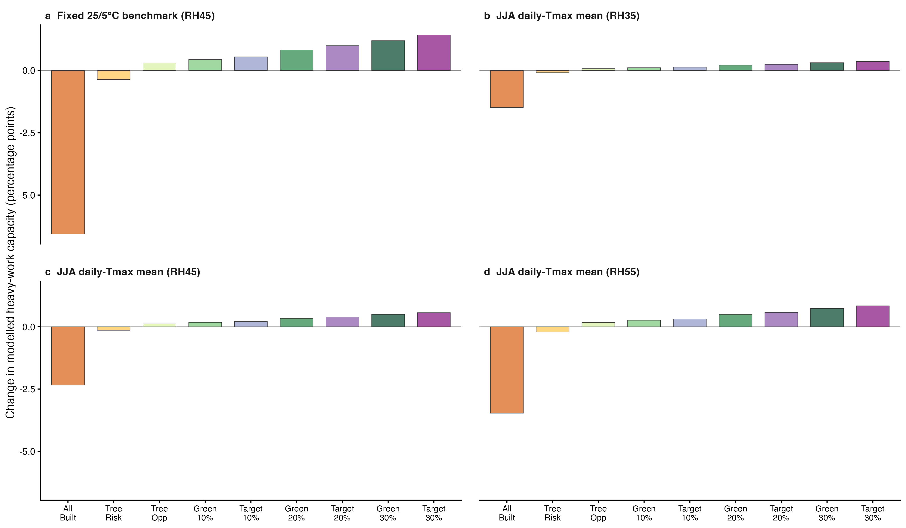
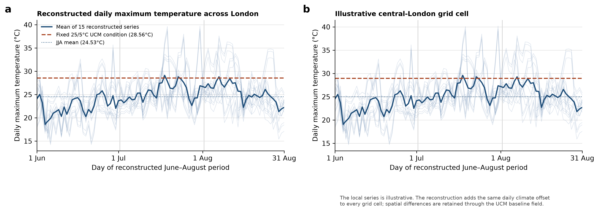

Current review package: Figure 4 v5 and Figure 5 v6. Calculations are complete; manuscript adoption remains subject to author review. Word and production outputs are unchanged. Copy-friendly HTML.
Confirm the explicit conditional-energy framing and the JJA daily-Tmax capacity interpretation; neither is a validated forecast of observed electricity use or working-day productivity. Review Figure 4 v5 and Figure 5 v6, with the fixed 25/5°C result retained as a supplementary benchmark. Once approved, transfer the proposed text to Word and reconcile Abstract, Table 2 and other numerical claims with the adopted results. No additional model runs are required to review this candidate package.
All four stages are complete (13 November 2026): independently reviewed pilots, reporting-framework agreement, all-nine calculations, and new PNG figures. The existing seasonal-health outputs were joined without recalculation. The JJA-capacity implementation is explicit and selectable; the fixed-condition adapter remains the default for backward compatibility. Earlier figures and production outputs remain unchanged. Author review and adoption are still pending.

Fig. 4 | Citywide co-benefits of alternative land-use scenarios under mid-century climate conditions. Bars show scenario-minus-baseline changes in a, conditional avoided electricity costs (£ million per 30-day warm period); b, London-boundary, area-weighted mean modelled heavy-work capacity (percentage points; summer daily mean); and c, all-cause heat-related deaths averted per modelled summer. Nine scenarios (Table 1) are compared under matched baseline–scenario conditions, holding 2021 population and registered mortality fixed. Colours identify scenarios; labels give estimates. Negative values indicate losses. Health error bars show 95% exposure–response uncertainty intervals, not total model uncertainty; energy and capacity do not include uncertainty intervals. Energy is a London-scaled demand-response proxy, not a forecast summer total. Capacity uses reconstructed daily maximum temperatures at 45% relative humidity, averaged over 92 June–August days and 15 climate–weather members; it is area-weighted, not worker-weighted. Health uses WorldClim-aligned SSP370 temperatures for 2041–2060.

Fig. 5 | Borough-scale changes in cooling-related co-benefits. Maps show scenario-minus-baseline changes across 33 London boroughs: a, conditional avoided electricity costs (£ million per 30-day warm period); b, area-weighted mean modelled heavy-work capacity (percentage points; summer daily mean); and c, all-cause heat-related deaths averted per modelled summer. Population and registered mortality are held at 2021 levels. Cross-borough building energy is apportioned by intersection area, conserving the London total. Bold coloured labels identify scenarios using the Fig. 4 colour families. Within each row, a shared symmetric pseudo-logarithmic (asinh) scale shows losses in orange, zero in white and gains in blue; colourbar labels retain original units. Maps depict spatial variation, not uncertainty. Outcome-specific exposure assumptions follow Fig. 4.
The manuscript-editing baseline is the earlier Word-revision draft, not the previous candidate report. Its comparison structure is retained; superseded annual-health values, energy scaling and fixed-condition capacity estimates are replaced. Earlier borough rankings and counts are not carried forward without rechecking.
Across Green and Target scenarios, modelled all-cause heat-related deaths averted ranged from 13.8 to 50.4 per modelled summer, with larger citywide benefits under Target at each canopy tier across all three outcomes (Fig. 4). Target30 averted 50.4 deaths (95% exposure–response uncertainty interval, 38.5–62.2), compared with 38.4 (29.3–47.3) under Green30. Their respective conditional avoided electricity costs were £3.97 million and £2.97 million per 30-day warm period, and area-weighted summer daily-mean heavy-work capacity gains were 0.57 and 0.50 percentage points. Conversely, AllBuilt resulted in 136.8 additional deaths per modelled summer, £8.92 million higher conditional electricity costs per 30 days and a 2.34-percentage-point capacity loss. Each comparison isolates land-use effects under matched baseline–scenario conditions, holding 2021 population and mortality fixed.
Citywide gains masked substantial borough-level variation (Fig. 5). Under Target30, deaths averted ranged from 0.03 to 3.09 per modelled summer per borough, conditional avoided electricity costs from £0.013 million to £0.510 million per 30-day warm period, and heavy-work capacity gains from 0.13 to 1.37 percentage points. All boroughs benefited under both Green30 and Target30. Although Target30 exceeded Green30 citywide for all three outcomes, larger aggregate benefits did not imply larger benefits in every borough.
Cooling-related electricity demand in the UK is concentrated in non-residential buildings: offices, retail and healthcare account for approximately 51%, 19% and 9% of non-domestic cooling and humidification energy consumption, respectively⁵⁵. Residential air-conditioning uptake has historically been low, with estimates of 2.8–5% of homes⁵⁵,⁵⁶. These observations informed the allocation assumptions below but do not establish sector-specific temperature–demand responses.
We estimated conditional electricity savings using the approximately 350 MW °C⁻¹ increase in Britain-wide electricity demand above 20 °C reported by Drax Electric Insights. We scaled this response by London’s share of Great Britain electricity consumption in 2021 (13.36%) and converted it to a 30-day energy sensitivity. Building footprints were obtained from Colouring Britain, with 2,223,481 buildings classified into 13 categories in the input dataset (Supplementary Table 4). Because these categories did not reliably distinguish detailed uses such as offices and hospitals, we allocated 99% of the scaled sensitivity to eligible non-residential buildings and 1% to residential buildings, proportionally to footprint area within each group. The 1% residential share was a modelling assumption representing a small, non-zero contribution, rather than an empirically estimated share of temperature-sensitive demand.
Building-level savings were calculated from paired baseline–scenario temperature differences, allocated energy-sensitivity coefficients, footprint areas and fixed electricity tariffs. The main calculation assumed full transfer of modelled cooling to the temperature metric underlying the demand response. Estimates represent conditional savings over a 30-day warm period, not forecasts of observed monthly consumption or future air-conditioning uptake. Coefficient derivation and building-category treatment are detailed in Supplementary Table 4 and Supplementary Fig. 7.
Borough allocations conserve the unique-building London total. Modelled heavy-work capacity was calculated by applying the continuous Hothaps response to simplified WBGT for each reconstructed daily maximum temperature at 45% relative humidity, before averaging equally over 92 June–August days and 15 climate–weather members. Capacity changes were weighted by grid-cell area within London and each borough. The capacity calculation uses current-day temperature offsets; the health analysis separately uses 0–1-day lagged exposure and a smaller common health mask. Supplementary analyses evaluated a fixed 25/5°C benchmark, alternative humidity assumptions, and energy-allocation and cooling-transfer assumptions. For all-cause mortality, 95% exposure–response uncertainty intervals were obtained by repeating the calculation with the reported lower and upper coefficient bounds. These intervals do not include uncertainty in climate, mortality allocation or other model assumptions; energy and capacity sensitivity scenarios are not uncertainty intervals.
Citywide candidate results.
| Scenario | Conditional energy savings (£m/30 days) | JJA daily-Tmax capacity change (percentage points; RH45) | All-cause deaths averted/modelled summer | 95% exposure–response uncertainty interval |
|---|---|---|---|---|
| AllBuilt | −8.920 | −2.337 | −136.85 | −169.46 to −104.25 |
| TreeRisk | −0.845 | −0.140 | −11.41 | −14.10 to −8.71 |
| TreeOpp | 0.519 | 0.117 | 6.08 | 4.64 to 7.50 |
| Green10 | 1.064 | 0.179 | 13.83 | 10.57 to 17.07 |
| Target10 | 1.435 | 0.210 | 20.01 | 15.29 to 24.69 |
| Green20 | 2.004 | 0.339 | 26.03 | 19.90 to 32.13 |
| Target20 | 2.654 | 0.391 | 35.90 | 27.45 to 44.29 |
| Green30 | 2.972 | 0.499 | 38.37 | 29.34 to 47.34 |
| Target30 | 3.966 | 0.569 | 50.40 | 38.55 to 62.16 |
The interval propagates the reported lower and upper exposure–response coefficients for all-cause mortality. It does not represent total model uncertainty; energy and work-capacity intervals were not estimated.
Period-selection decision: the July versus summer diagnostic and reviewer debate, followed by an independent AI cross-check, supports JJA daily-Tmax capacity as the preferred manuscript candidate. The fixed 25/5°C calculation is retained as a benchmark. This is a change of estimand, not a correction that proves the earlier estimate was biased.
| Outcome | Main candidate | Separate sensitivity | Do not interpret as |
|---|---|---|---|
| Energy | London-scaled pooled building allocation, corrected temperature contrast, conditional 30-day kWh and £ | Sector allocation; half versus full assumed cooling transfer | Locally calibrated or forecast summer electricity savings |
| Heavy-work capacity | JJA mean daily-Tmax-based Hothaps capacity at RH45; London area-weighted percentage-point change | Fixed 25/5°C benchmark and JJA RH35/RH55 sensitivities | Average working-day capacity, worker-hours or measured productivity |
| Health | Existing corrected seasonal-health results, WorldClim-aligned SSP370 2041–2060, June–August | Previously documented health sensitivities | Future observed mortality forecast |
Different outcome units and exposure interpretations must remain explicit. The panels compare land-use interventions; they are not three interchangeable summer totals. The capacity mask and building-energy support need not equal the health mask, but each outcome must use matched baseline/scenario support and report its coverage.
Energy holds the transferred demand response, building allocation and tariffs fixed; it does not project future air-conditioning uptake or electricity prices. The full/half cooling-transfer cases are assumptions about applying the spatial cooling contrast, not empirically estimated uncertainty bounds.
All-nine QA passed: 80 city energy records reconcile to 2,640 borough records (maximum residual below 0.000001); 50 capacity records reconcile to 1,650 borough records (maximum residual 3.02 × 10⁻¹⁴ percentage points). Building and pixel support match across scenarios within each outcome; baseline changes are zero; warming losses remain signed. Input hashes are unchanged. The adapter additionally checks identical borough sets and absolute-minus-baseline equality. Plot tests and rendered PNG inspection passed.
The final independent PI-role check reconciled all 27 Figure 4 values against Figure 5 (energy and health summed; capacity area-weighted). Maximum differences were 5.60 × 10⁻¹⁴ £ million, 1.10 × 10⁻¹² percentage points and 3.27 × 10⁻¹³ deaths. The reported borough ranges and matched-scenario sensitivity rankings were independently verified.
Target exceeds Green at each matched canopy level for the three main outcomes. The matched-budget ranking also persists across all tested energy allocations/transfers and capacity exposure/humidity settings. This robustness is conditional on the tested assumptions, not empirical validation. Cross-budget rankings need care: corrected sector energy gives Green30 £2.886765m versus Target20 £2.877743m, a small £9,023 difference; the earlier uncorrected sector reversal is not the current result.
The external review supported outcome-specific periods and JJA daily-Tmax capacity as the more coherent main candidate, but four details were corrected against the saved data and code:
offset_c field on 15,733,893 cells;
health uses lag01_offset_c on 14,258,588 cells.
Supplementary figure | Sensitivity of modelled heavy-work capacity to exposure and humidity assumptions. Bars compare a fixed 25/5°C benchmark at 45% relative humidity with June–August means calculated from daily maximum temperatures at assumed relative humidities of 35%, 45% and 55%. For the daily-temperature panels, capacity is calculated before averaging equally over 92 days, three climate models and five historical weather patterns. Changes are area-weighted London means relative to matched baseline land use. Humidity settings are separate sensitivity scenarios, not confidence limits. The estimates do not represent average capacity across working hours.

Panel a is the area-weighted London mean across the same 15,733,893 valid cells used for the Figure 4b JJA capacity calculation. It therefore is the relevant exposure series for interpreting the reported citywide result. Thin lines are the 15 GCM–weather-year reconstructions; the heavy line is their day-specific mean. The fixed 25/5°C UCM condition is represented by its matched London-area mean (28.561°C), rather than by a 92-day time series. The reconstructed JJA mean is 24.525°C.
Panel b adds one illustrative local trajectory: the nearest valid 10-m grid cell to Charing Cross (530,025 m E, 180,375 m N, British National Grid). Its reconstructed JJA mean is 24.998°C, compared with 28.965°C under the fixed 25/5°C UCM condition. It is not used to calculate Figure 4b. The WorldClim-aligned reconstruction retains the UCM spatial baseline field, then adds the same member/day climate offset to every grid cell; hence this local curve shows how an urban-centre location differs in level, while its day-to-day variation is parallel to the citywide curve.
The diagnostic is reproducible with plot_jja_capacity_temperature_context.py.
Its CSV and manifest sit beside the PNG in the versioned
jja_daily_tmax_context_20261113_v01 diagnostic folder. It
does not modify the capacity or health outputs.
These supporting comparisons explain the implementation decisions; they are not additional main-manuscript results. Execution follows the three-reviewer consensus.
| Conditional 30-day estimate | Green30 | Target30 |
|---|---|---|
| Pooled full-transfer candidate (£ million) | 2.972 | 3.966 |
| Pooled full-transfer candidate (GWh) | 10.786 | 14.456 |
| Temperature correction alone, same coefficients/support (£ million) | +0.0486 | +0.0579 |
| Sector-allocation sensitivity (£ million) | 2.887 | 4.189 |
Half-transfer changes are exactly half their full-transfer counterparts; they are assumed sensitivities, not confidence limits. The correction to temperature is much smaller than the earlier coefficient/allocation correction. The first pilot retains the Target30 advantage under both allocation variants.
The native polygon-based extraction reproduced the legacy baseline building temperatures with 0°C maximum difference. Of 2,223,411 buildings overlapping London, 2,223,405 have valid paired temperatures. Six buildings (167.718 m² footprint) are excluded identically; 330 buildings have partial NoData coverage identically across the three corrected rasters. Their combined whole footprint is 52,936.576 m², not the area of missing pixels. Shared valid raster support was checked, so partial coverage does not silently differ between scenarios. Borough energy allocations reconcile citywide values within 0.000001 in reported aggregate units. Input hashes are unchanged.
All values are changes in percentage points, not percent relative changes or working hours.
| Capacity calculation | Green30 | Target30 |
|---|---|---|
| Legacy fixed-condition replay on matched support, RH45 | 1.1913 | 1.4193 |
| Corrected fixed-condition candidate, RH45 | 1.1986 | 1.4276 |
| Summer mean of daily-Tmax-based capacity, assumed RH35 | 0.3139 | 0.3594 |
| Summer mean of daily-Tmax-based capacity, assumed RH45 | 0.4990 | 0.5691 |
| Summer mean of daily-Tmax-based capacity, assumed RH55 | 0.7363 | 0.8408 |
Corrected temperature inputs change the fixed-condition estimates only slightly. The daily reconstruction gives materially different magnitudes, reflecting a different distribution of exposure as well as evaluation of a nonlinear response before averaging. This comparison is not an isolated estimate of the effect of nonlinearity, nor evidence that either calculation represents observed working-day capacity. Target30 exceeds Green30 in each tested setting; the difference’s magnitude depends on the assumptions.
The capacity mask contains 15,733,893 valid London cells: 63 fewer than the previous capacity support, and 1,475,305 more than the health support. Each capacity comparison uses the same mask; health offsets retain their original centring rather than being recentered on this larger domain. Lookup error against direct daily calculations is at most 1.09 × 10⁻⁹ in capacity fraction; borough-to-city reconciliation is below 4 × 10⁻¹⁵ percentage points. Bounds, baseline-zero, local cooling/warming sign and source-preservation checks passed. A separate replay against saved legacy capacity on the new matched support differs by less than 2 × 10⁻⁹ percentage points for the Green30/Target30 mean changes.
Outputs are separate diagnostic candidates, not new production aliases:
The run-family names retain 20261112; the final figures use their
completion date, 20261113. Only output names are versioned, not scripts.
The energy/capacity manifests record input hashes and the figure
manifests record plot sources. Use the command-line help for both
runners; the summary adapter requires --energy,
--capacity, a fresh --output directory and an
explicit --capacity-method when selecting
daily_tmax_sensitivity. Both main plot scripts use
--seasonal-health-root pointing to
seasonal_health_all_scenarios_2026-11-12_v1, plus a new
--figure-version. The capacity sensitivity plot takes the
capacity city CSV and a new PNG path. Do not reuse a completed candidate
output directory/version.
The energy correction explanation remains authoritative for the coefficient rationale and worked examples; it is not duplicated here. The seasonal-health report remains authoritative for health assumptions and results.